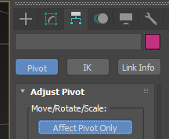
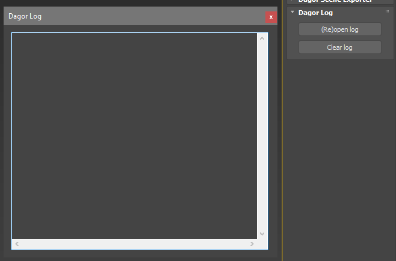
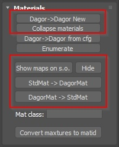
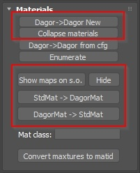

Dagor Max Tools
Overview
3ds Max includes several Dagor tools that are particularly useful for our workflow.
Dagor Scene Import: a tool for importing several models at once.
Dagor Scene Export: a tool for exporting assets, animations, and more.
Dagor Utility: a tool for procedural model adjustments.
Connecting Tools
The tools are located here: .../tools/dagor_cdk/windows-x86_64/plugins-3dsMax.
The process of connecting them is similar to other third-party plugins in 3ds Max:
Go to Customize > Configure User and System Paths.

Select the 3rd Party Plugins tab and use the Add button to add the path to the tools.

Enabling Utilities in UI
Tools won’t appear in UI right after installation, you have to add them to Utilities manually.
{kind=link}
It’s quite easy to do:
In the utilities press the Configure Button Sets button (one with a gear icon).
Drag&Drop necessary utilities to the buttons.
Optionally, you can enter a new name to Sets: and press Save to add this set to dropdown.
Let’s take a closer look at these tools.
Importing Files
This toolset has several ways to import .dag files.
File > Import
A basic way to import assets. Works well for a single asset or a small group of
related assets. It places nodes into layers named after the filename (minus the
extension): for example, base_name.lod00.dag will be imported into the
base_name.lod00 layer.
When you choose a file path, the following dialog should appear:
It has several parameters:
Use legacy import: ignore all the parameters and use the old way of importing files instead. Wipe out all layers in scene, pile up existing nodes in root layer. Put new asset parts to new layers with hardcoded names: LOD00, LOD01 and so on, no matter how asset itself is named. It’s quite destructive and can’t work for several assets at once. It still exists only for compatibility reasons: some old scripts used this mode.
Use legacy import: ignores all other parameters and uses the old import method instead. This mode clears all layers in the scene, moves existing nodes into the root layer, and places new asset parts into new layers with hardcoded names:
LOD00,LOD01, and so on, regardless of the asset’s actual name.This method is quite destructive and does not support importing multiple assets at once. It remains available only for compatibility reasons, as some old scripts still rely on it.
Every Import… parameter uses base_name of selected file to search for
variations. To get a base_name, importer gets a filename and cuts it on the
first dot: base_name.lod00.dag to base_name.
Import LOD: when active, searches for all
*.lod??.dag. When disabled, imports only the current LOD.Import DP: searches for Damage Parts:
base_name_dp_??.lod??.dag. DPs are also affected by the Import LOD parameter.Note
If the user selects a DP as the base file, base_name will be set to
asset_name_dp_01, for example. In this case, other DPs won’t be imported becauseasset_name_dp_01_dp??does not exist.Import DMG: controls the import of
*_dmgvariations. Affects both the base asset and DP if imported. Affected by the Import LOD parameter.Import DESTR: controls the import of the
*destr.lod00variation of the base asset and DP. This is a dynamic asset with no LODs, so the Import LOD parameter does not affect it. It is alwayslod00.Resolve layer name collision: this parameter defines how to handle naming conflicts if the asset already exists in the scene:
Rename new layer will import
base_name.lod00.daginto a new layer with a different index, such asbase_name_001.lod00. The existingbase_name.lod00will remain unchanged.Replace existing layer will clear the existing
base_name.lod00layer and import the new nodes into it.
Drag & Drop
This alternative way to trigger the importer uses standard 3ds Max behavior. When a file is dragged from Explorer into the viewport, the importer dialog will appear.
After confirmation, all imported nodes will follow the mouse cursor. Clicking LMB will place them in the scene. If you click RMB instead, while the nodes are still moving, the import will be canceled.
However, any new layer(s) created for the asset(s) will remain in the scene, just empty. Neither of these outcomes is useful in our case.
Important
To import nodes via drag & drop, hold the Ctrl key while dragging the file into the viewport. This undocumented modifier key disables the offset applied after import.
Dagor Scene Import
This utility can do more than basic import. It is based on the Batch Import panel of dag4blend.
It offers four modes: Legacy, Standard, Wildcard, and Regex.
Legacy
{kind=link}
Matches the legacy mode of File > Import.
Standard
{kind=link}
Mostly matches File > Import, but can also check for related files in subfolders of the base asset’s directory.
Wildcard
{kind=link}
Instead of a single file path, this mode uses a directory path (Dir path) and a set of rules for processing files. It uses syntax similar to the fnmatch Python library.
Pattern |
Meaning |
|---|---|
|
matches everything |
|
matches any single character |
|
matches any character in seq |
|
matches any character not in seq |
Every other symbol is processed as is.
Includes: a set of masks for selecting
.dagfiles. If a filename matches at least one of the include patterns, it will be imported. If a filter contains no characters, it will be highlighted in red and ignored during import.Excludes: uses the same syntax as Includes, but excludes matching files from import.
Note
This mode uses exact matching, so even if a filename contains the include
pattern, it might still be skipped. Use * to indicate where additional
characters are allowed.
The only exception is the file extension: each filter is matched against both
filename.dag and filename, so you don’t need to specify the extension every
time.
Example:
Includes:
"asset_a.lod0[0,2]", "asset_b_dp*"Excludes:
"*_dmg*"
This will import asset_a.lod00.dag, asset_a.lod02.dag, and all LODs of all
asset_b_dp files, except their _dmg variations. The file
other_asset_a.lod00.dag will be skipped because the Includes pattern does
not start with *, so extra characters at the beginning are not allowed.
Regex
This mode is quite similar to previous one, but uses full power of regular expressions.
It exist for rare cases, when previous mode is not enough for some comlex processing. If you’re not familliar with regex synthax, just stick to Wildcard mode.
Note
When you paste a filepath from Explorer into the File Path field of the
Simple mode, quotation marks (") are removed automatically.
When you paste a filepath into the Dir path field of the Wildcard or Regex modes, it’s trimmed down to the directory path, while the filename is moved to the includes section (with corrected syntax).
Note
3DS Max will be unresponsive until the import is complete. Currently there is no way to monitor importing process, so just wait.
Dagor Scene Export
Dagor Max Tools do not support exporting files directly via File > Export.
Instead, the Dagor Scene Export utility is used for exporting assets,
specifically for saving scenes into .dag files. This is the primary function
of interest. We’ll skip the Animation and Other panels for now.
{kind=link}
The DAG exporter is divided into several sections. It’s easier to describe them in a different order.
Data Types
This block controls which data types would be exported. Most of the names are self-explanatory:
Mesh: exports of geometry. In almost every case, this should remain enabled.
Helper
Light
Materials: exports of materials. When disabled, materials are replaced with placeholders.
Camera
Splines
Vertex normals: custom vertex normals, if they exist. This option has some quirks, which are described later.
Processing
Contains parameters that modify exported date before writing it to a file.
Optimize materials: removes unused materials and joins material slots that use the same material into one. This should generally remain enabled.
Note
These parameters now have tooltips that provide additional explanations.
Export Mode
Mostly self-explanatory. The Selected and Hidden parameters have a significant impact on how some export modes behave, so they are placed in the same block.
Standard
The oldest export mode, designed to work with the hierarchy produced by the
Legacy import. It takes a single file path as a parameter but can
split the output into variations if layers with hardcoded names like LOD??,
DMG_LOD??, or DESTR are found.
Objects as DAGs
This mode takes a directory path as a parameter. As the name suggests, it
exports each object as a separate .dag file. The filename is based on the
object’s name, and the pivot is local, taken from the object itself, not from
the scene center. This means that even if the object is offset, rotated, or
scaled in the scene, it will be exported in its original state, as if
rotation=location=[0,0,0] and scale=[1,1,1].
To export multiple objects into a single .dag file in this mode, group them.
The group will be treated as a single object.
Important
When creating a group, 3ds Max automatically sets its pivot to the center of the group’s bounding box. This can result in an unintended offset, even if all components originally had correctly aligned pivots.
To avoid this, you should manually adjust the pivot position after grouping and before exporting:
Layers as DAGs
This mode also takes a directory path as a parameter. It works with the hierarchy created by non-legacy import. The Hidden and Selected parameters behave differently in this mode.
Export Rules:
Only layers at the bottom of the hierarchy (those without nested layers) will be exported. If a layer contains no objects that match the export parameters, no
.dagfile will be created.The
defaultlayer is never exported, since it’s unlikely you’d need adefault.dag. However, its nested layers will still be checked and exported if they meet the criteria.If
Selected=True, only the currently selected layer (indicated by a different icon color in the Scene Explorer) and its nested layers will be processed.If
Selected=False, all layers in the scene will be checked.If
Hidden=True, hidden objects and layers will be exported.If
Hidden=False, hidden layers will be skipped, and hidden objects will not be included.
For example, in the image above, the current layer is asset_a.lods. If
Selected=True, only this layer and its child layers will be processed. Other
top-level layers, such as asset_b.lods and asset_c.lods, along with their
contents, will be ignored.
The current layer contains child layers, so it will not be exported.
The child layer
asset_a.lod00has no further nested layers but contains two visible nodes. It will be exported asasset_a.lod00.dagregardless of the Hidden setting.The
asset_a.lod01layer has no nested layers, but one node is hidden. IfHidden=True,asset_a.lod01.dagwill be exported with both nodes included; ifHidden=False, only the visibleaxis.lod01node will be exported.The
asset_a.lod02layer will be exported asasset_a.lod02.dagonly ifHidden=True, since it is hidden.The
asset_a.lod03layer will never be exported, as it contains no nodes, making visibility irrelevant.
This method is especially useful when working with a pack of assets rather than
a single one. For example, by grouping the layers asset_[a,b,c].lods into a
general layer called assets and making it active (or simply activating the
default layer as shown above, or setting Selected=False), you can re-export
the entire pack with all LODs (levels of detail) in a single click.
Vertex Normals and Optimization
When exporting objects, if custom normals are not assigned, the object will be exported without them, even if the Vertex normals option is enabled.
However, unlike .max files, .dag files cannot store custom normals for only
a portion of an object’s vertices while calculating the rest based on smoothing
groups. If even one vertex in an object has a custom normal, the .dag file
will store normals for all vertices.
Example 1: the character model and the beveled cube with weighted normals, where the cube is a separate object.
Upon export, custom normals were preserved only for the cube, since the character model had no custom normals assigned.
After re-importing, we can see that the character model lacks custom normals (normals are shown in blue in the Edit Normals modifier).
The
.dagfile size is 75 KB.
Example 2: the character model and cube were combined into a single object before export.

During export, custom normals were saved for every vertex, not just those belonging to the cube.
After re-importing, all the vectors on the character model appear “greened out”, even though they originally looked like the previous image before export.
The
.dagfile size is 166 KB.
Therefore, if you need to adjust shading using custom normals, it’s advisable to
detach the editable part of the model before applying custom normals.
This way, the .dag file size won’t increase unnecessarily after export. Be
sure to verify by re-importing the file to check if any unwanted normals have
appeared.
Once custom normals are assigned, even resetting them through the Edit
Normals modifier or attaching the object to a new one won’t completely remove
them. The only reliable workaround is to export the objects to a .dag file
with vertex normals disabled, delete the original, and then re-import the
cleaned file. This ensures all references to custom normals are removed, and
export behavior will return to normal.
After such a re-import, apply Dagor Utilities > Materials > Collapse Materials to prevent materials from being split into two copies with the same names.
Export Log
The Export Log records the results of each export operation.
If you encounter any export errors, do not ignore them. Check the log to identify which objects in the scene are causing problems. Common errors include:
Degenerate triangles.
Unsmoothed triangles.
Geometry that is too large.
Non-Dagor materials assigned.
The log is now displayed in a separate, resizable window and will automatically open during export only if errors are detected. If there are no warnings, the export information is recorded, but the log window won’t pop up. So, if the log opens after export, carefully read it and address any issues. To view information about the most recent export, you can manually open the log by clicking the (Re)open Log button. If the log window was already open, clicking the button will reset its size and position to default, which is useful if the log was accidentally resized beyond the screen or moved off-screen.
Dagor Utility
The Dagor Utility tool is designed for the automatic correction and refinement of models. Below are the primary functions you’ll likely use:
Important
All these functions only work in Editable Mesh mode.
Remove degenerates: this function removes degenerate triangles, which are triangles with edges that lie on the same plane. If you encounter an error during export indicating the presence of degenerate triangles, use this tool.
 
Caution
Sometimes, this function can disrupt the shading of the model. If that happens, converting everything back to Editable Poly should resolve the issue.
Dagor -> Dagor New: converts the material assigned to a model from DagorMat1 to DagorMat2.
Collapse materials: merges materials with the same name and identical parameters into a single material. This is useful when importing multiple LODs of the same object into 3ds Max. By default, these LODs have duplicated materials, so modifying the material on one LOD won’t affect the others. This function combines the duplicated materials into one. It’s crucial to use this function before making any modifications to the imported materials.
Show maps on s.o. (selected objects): forces textures to display on objects with Dagor materials. There may be instances where textures don’t display correctly due to glitches – this button helps resolve that.
Hide: forces textures to hide.
StdMat -> DagorMat: converts a standard 3ds Max material to a DagorMat. The conversion is not perfect – it only transfers the diffuse texture. However, it can still be useful in some situations.
DagorMat -> StdMat: the reverse procedure, converting DagorMat back to a standard material. This process is also imperfect, but it might come in handy.
UV Utils: provides tools for modifying UV mapping:
Copy: copies UV mapping to another channel.
Swap: swaps UV mapping between channels.
Move: transfers UV mapping to another channel.
Kill: deletes UV mapping on a specific channel (i.e., specifying the same channel in both channels).
CopyBuffer / PasteBuffer: these theoretically allow copying UV mapping from one model to another. This functionality has not been thoroughly tested.
See also
For more information on additional optional tools that are installed separately, see Dagor MaxScript Toolbox.